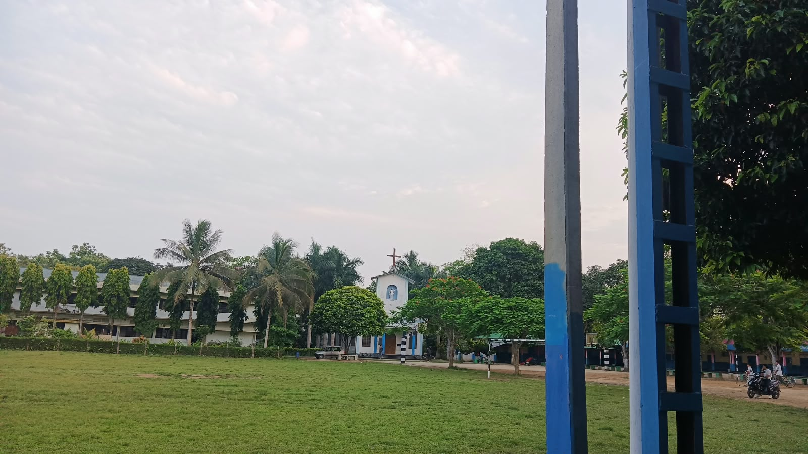
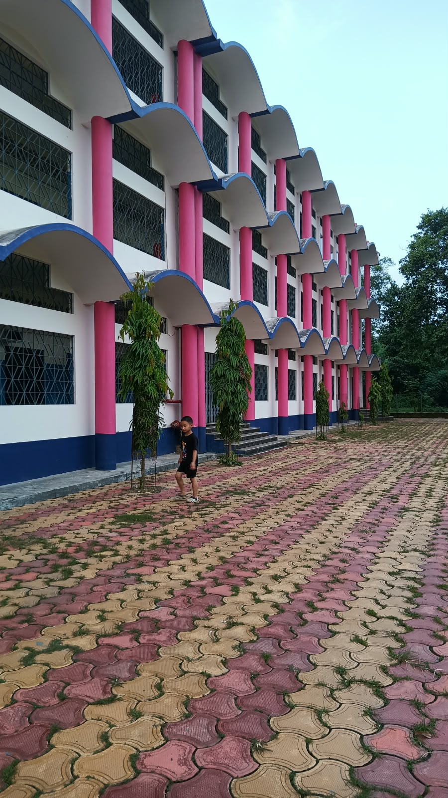

A pristine, well-governed, and harmonious residential community.
Mendenti Ward is celebrated for its orderly environment and immaculate public spaces. Through periodic sanitation drives and civic initiatives actively organized by an elected Ward Committee, our residents work together to ensure a clean, green, and sustainable neighborhood.
A glimpse into our pristine environment and educational facilities:


Our ward supports local development through key private and civic assets: